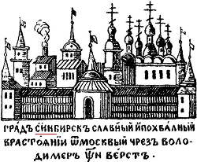
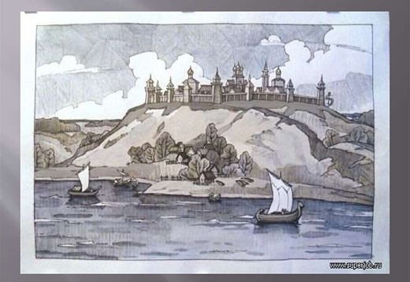
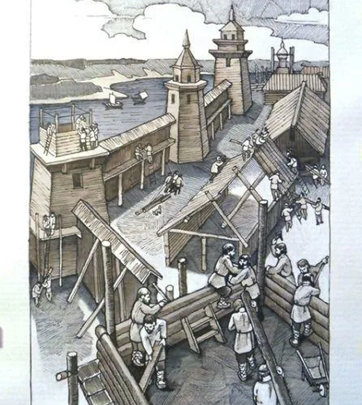

Основание крепости Синбирск
Город был основан по указу царя Алексея Михайловича как крепость Синбирск на высоком правом берегу Волги в 1648 году.
Благодаря своему выгодному географическому положению на важнейшей водной артерии — реке Волге, город быстро превратился из военного форпоста в значимый торговый и административный центр.


